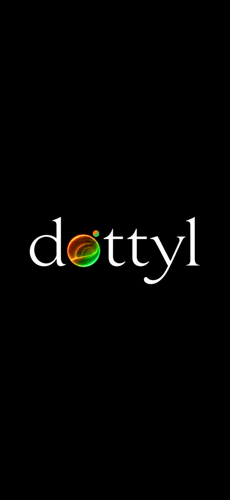

Этому браузеру не хватает поддержки canvas. / Your browser does not support the canvas tag.
Для игры нужен JavaScript. / JavaScript is required to play.

Поверните телефон вертикально
Turn your phone upright